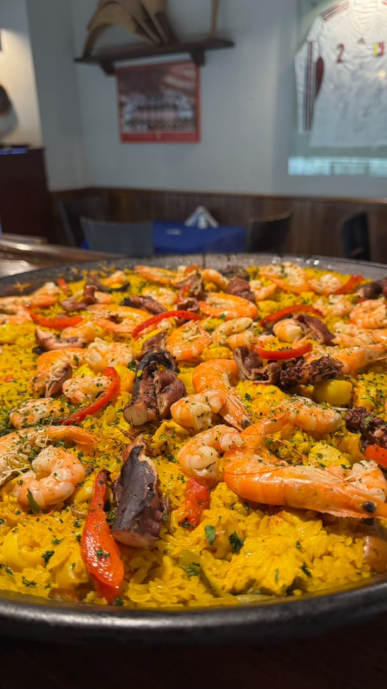
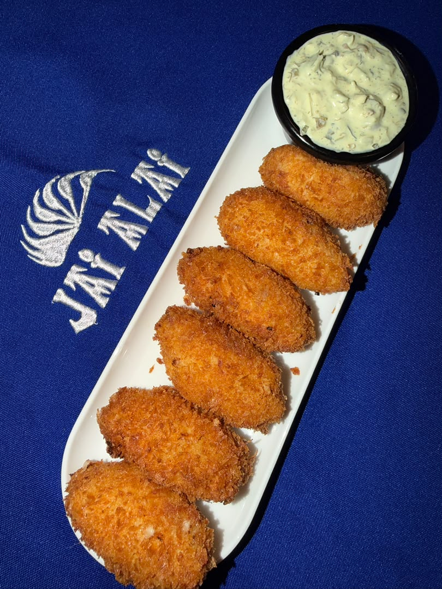
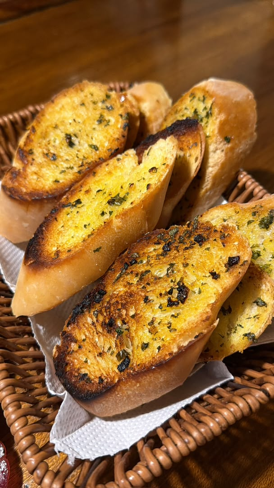
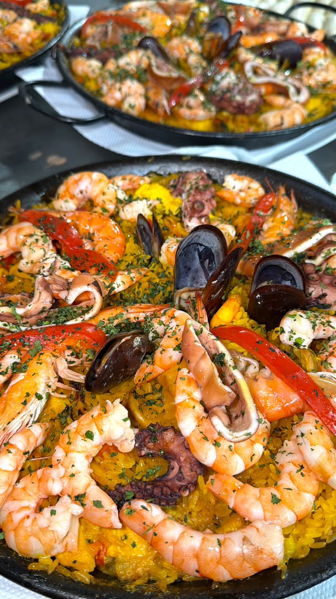

TASCA · RESTAURANT · CIUDAD GUAYANA

Una mesa para disfrutar sin prisa.
Descubre nuestro menú, revisa los horarios y llega directo a Jai Alai. También puedes consultar delivery por WhatsApp.
HoyConsulta horario
DeliveryDisponible
Contacto+58 424-9372501
JAI ALAI
El menú real de Jai Alai, ahora en una experiencia más fácil de explorar.
Entradas, carnes, aves, pescados, mariscos, hamburguesas, especiales y contornos organizados para que encuentres rápido lo que buscas.
Explorar categorías ↘
EspecialesMar y Tierra · Paella · Arroz a la marinera
DE LA COCINA A TU MESA
Sabores que hablan por sí solos.






VISÍTANOS
Jai Alai te espera en Ciudad Guayana.
Calle Potosí con Calle Visconi, Local S/N, detrás de Tasca Restaurant Jai-Alai, Ciudad Guayana 8050, Bolívar, Venezuela.
Lunes a jueves12:00 pm – 9:00 pm
Viernes y sábado12:00 pm – 10:00 pm
Domingo12:00 pm – 4:30 pm